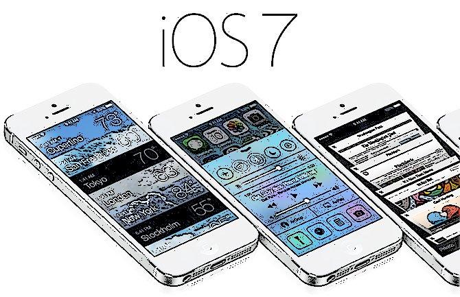

Definicion del Sistema Operativo IOS
El iOS es el sistema operativo diseñado por Apple para sus productos, iPhone, iPad, iPod Touch, y Apple TV , otros dispositivos como el iPod Nano y el iWach utilizan otro sistema más básico y dirigido a una función más específica basado en iOS porque incorpora algunos de sus gestos e iconos y además se pueden sincronizar con teléfonos o Tablets.
El iOS llega al público presentado por el fallecido visionario fundador de Apple Steve Jobs con un sistema de capaz de aplicaciones que serviría de referencia para muchos más sistemas que hoy cunden el mercado de escritorios llenos de personalización, iOS siempre ha sido más personal, intuitivo y eficaz.
Caracteristicas
Con la presentación de iOS 7 Apple está marcando un nuevo capítulo dentro de su historia y es que su nuevo diseño y la incorporación de nuevas funcionalidades vendrán a mejorar la experiencia de los usuarios con sus dispositivos portátiles.
Centro de control
Todo ha sido rediseñado en iOS 7, y hay una nueva funcionalidad la cual se llama Centro de Control y su finalidad es brindar un acceso más rápido en las funciones que son más usadas por los usuarios.
Centro de notificaciones
Esta funcionalidad ha sido mejorada de igual forma, siempre se tendrá acceso deslizando desde la parte superior de la pantalla. La novedad que se puede encontrar es su nueva vista de presentación y la integración de la nueva función Hoy, apartado que nos mostrará todas aquellas noticias que efectivamente estén ocurriendo hoy. También se podrá tener acceso desde la pantalla bloqueada a esta funcionalidad.
Multitarea
La función multitarea siempre se ha presentado al presionar dos veces seguidas el botón de inicio, y así será también en iOS 7 pero con la diferencia que se ha cambiado la forma de presentar este apartado.
Interfaz renovada en iOS 7
Todo ha sido reestructurado para ofrecer una mejor experiencia eniOS. Siri en iOS 7 viene más completo y ahora puede realizar más actividades como encender el Bluetooth, responder más rápido, incluso su voz es más natural y puede configurarse para ser voz femenina o masculina. En cuanto a las app para actualizarlas ya no tendremos que dirigirnos a la App Store sino que cada una tiene la capacidad para hacerlo por sí misma. iTunes Radio permite escuchar estaciones de radio vía streaming.